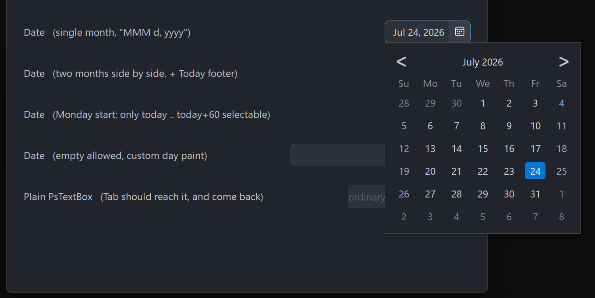

PsDatePicker
An owner-drawn date picker: an editable date field with a calendar icon on the right, and a popup calendar the control owns. Typing a date and picking one from the calendar are two routes to the same SYSTEMTIME value.
The field is a real editing control — a borderless PsTextBox — so typing, the caret, selection, undo, paste and the right-click menu all behave the way a text box does. The calendar is a separate top-level window: a month grid with prev/next navigation, a clickable title that drills down from days to months to a decade of years, an optional second month side by side, week-start choice, a min/max range, a today ring, and an optional clickable "Today" band at the foot.
The host owns date format and parsing. The control stores a SYSTEMTIME and imposes no locale: you supply a Format callback that renders a date into field text and a Parse callback that resolves typed text back into a date. Without a Format callback it falls back to ISO yyyy-MM-dd so it is usable before you wire anything; without a Parse callback typed text is never accepted and only the calendar can set the date.
If you want a calendar embedded in your window rather than dropping out of a field, that is PsCalendar — no text box, no popup, and no pump obligation.
Repository: <https://github.com/PaulSquires/PsDatePicker>
What it looks like

Four pickers: a single month, two months side by side with the Today footer, a Monday-start calendar limited to a 60-day range, and an empty-allowed field with a host day painter.
Requirements
This control both wraps a real child and owns a second top-level window, so its file list is longer than most. Copy all of these:
| File | What it is |
|---|---|
PsDatePicker.bi | Public header — types, enums, callback typedefs, declarations |
PsDatePicker.inc | Implementation |
PsTextBox.bi / PsTextBox.inc | The editable field |
PsPopupMenu.bi / PsPopupMenu.inc | The field's right-click menu (required by PsTextBox) |
PsBufferPaint.bi / PsBufferPaint.inc | Flicker-free GDI+ drawing surface |
PsTipHost.bi / PsTipHost.inc | The tooltip backend switch |
PsTooltip.bi / PsTooltip.inc | The optional owner-drawn tooltip backend (required by PsTipHost) |
It also needs the AfxNova framework on the include path (fbc -i "C:\dev" if AfxNova lives at C:\dev\AfxNova).
Include order
PsDatePicker.bi names types from PsBufferPaint, PsTipHost and PsTextBox and includes those headers itself, but the implementations must be pulled in ahead of it, in this order:
#include once "windows.bi"
#include once "AfxNova\CWindow.inc"
#include once "AfxNova\AfxStr.inc"
#include once "AfxNova\AfxGdiplus.inc"
using AfxNova
#include once "PsBufferPaint.inc"
#include once "PsPopupMenu.inc"
#include once "PsTextBox.inc"
#include once "PsDatePicker.inc"PsDatePicker.inc includes PsTipHost.inc (and through it PsTooltip.inc) for you, so those two need no line of their own — but the files must be present.
Initialise GDI+
The control renders through GDI+. Bracket your message loop with AfxGdipInit and AfxGdipShutdown, or it draws nothing at all:
dim as ULONG_PTR gdipToken = AfxGdipInit()
' ... create windows, run the message loop ...
AfxGdipShutdown( gdipToken )AfxGdipShutdown must come after every window is destroyed.
Do not name anything ok
GDI+ defines Ok = 0 as a Status enum value in namespace AfxNova, and your host almost certainly says using AfxNova. Any identifier of your own called ok becomes a duplicate definition the moment you adopt this control. Use bOK.
Message pump — PsDatePicker_FilterMessage is NOT optional
dim uMsg as MSG
do while GetMessage(@uMsg, null, 0, 0)
if PsDatePicker_FilterMessage( @uMsg ) then continue do
TranslateMessage @uMsg
DispatchMessage @uMsg
loopOne call discharges three obligations at once:
- it forwards to
PsTextBox_FilterMessage, without which the field's right-click menu has no keyboard navigation and never closes on an outside click; - it dismisses the open calendar on Esc and on a click outside it — the popup never takes activation, so it cannot see either event itself;
- it arms a one-shot guard so that an icon click which just dismissed the calendar does not instantly reopen it.
Skip the call and the calendar becomes a popup you can only close by picking a date.
Tab navigation into and out of the field needs no IsDialogMessage: PsTextBox handles VK_TAB itself, and the container carries WS_EX_CONTROLPARENT so that walk can see through it.
Quick start
dim as HWND hDate = PsDatePicker_Create( hMainWindow, IDC_MYDATE )
PsDatePicker_SetFont( hDate, hFont ) ' caller-owned HFONT
PsDatePicker_SetFormatCallback( hDate, @MyFormat ) ' date -> field text
PsDatePicker_SetParseCallback( hDate, @MyParse ) ' typed text -> date
PsDatePicker_SetDateChangedCallback( hDate, @MyChanged )
dim as SYSTEMTIME stNow
GetLocalTime( @stNow )
PsDatePicker_SetDate( hDate, PsDatePicker_MakeDate( stNow.wYear, stNow.wMonth, stNow.wDay ) )
' Size it to whatever it asks for, then show it.
dim as long w, h
PsDatePicker_GetIdealSize( hDate, w, h )
SetWindowPos( hDate, NULL, 20, 20, w, h, SWP_NOZORDER )
ShowWindow( hDate, SW_SHOW )And the callbacks it wires:
' date -> display text
sub MyFormat( byval hCtrl as HWND, byval pDate as SYSTEMTIME ptr, byref sOut as DWSTRING )
if pDate = 0 then sOut = "" : exit sub
sOut = str(pDate->wYear) & "-" & format(pDate->wMonth,"00") & "-" & format(pDate->wDay,"00")
end sub
' typed text -> date. Return FALSE for anything you cannot accept.
function MyParse( byval hCtrl as HWND, byval sText as DWSTRING, byval pDate as SYSTEMTIME ptr ) as boolean
if pDate = 0 then return false
dim as string s = trim( sText )
dim as long y = valint( mid(s, 1, 4) )
dim as long m = valint( mid(s, 6, 2) )
dim as long d = valint( mid(s, 9, 2) )
if (m < 1) orelse (m > 12) then return false
if (d < 1) orelse (d > PsDatePicker_DaysInMonth( y, m )) then return false
*pDate = PsDatePicker_MakeDate( y, m, d )
return true
end function
sub MyChanged( byval hCtrl as HWND, byval pDate as SYSTEMTIME ptr, byval bHasDate as boolean )
if bHasDate = false then exit sub ' the field was cleared
' pDate is the new value
end subConcepts
The handle is a real HWND
PsDatePicker_Create returns an ordinary child window. Position and size it with SetWindowPos, show it with ShowWindow, destroy it with its parent. It is created 0×0 and invisible; nothing appears until you size and show it.
Format and Parse must round-trip
This is the one wiring mistake that produces no error message. On commit the control calls your Parse callback with whatever is in the field; if Parse returns FALSE the field silently reverts to the last text the control wrote — which is exactly what it looks like when the user typed nothing at all. So if your Format produces "Jul 24, 2026" and your Parse only understands digits, every commit made after the calendar or a setter wrote the field will fail and revert.
Assert Parse( Format( d ) ) = d for a few dates when you wire the pair.
Focus lives two levels down
The field is a PsTextBox, whose own input window is a RichEdit. GetFocus() = hCtrl is never true. Ask PsDatePicker_HasFocus instead.
Programmatic setters are silent
SetDate, ClearDate, SetRange and ReformatText never fire DateChangedCallback. It fires only for user action: a typed commit (Enter, or focus leaving the field) or a calendar pick. That is what lets you call a setter from inside your own handler without re-entering it.
DropDownCallback is the deliberate exception: it reports a window-state transition rather than a value change, so it fires for PsDatePicker_DropDown and PsDatePicker_CloseUp too.
Rects are derived, never set
rcFrame, rcField, rcDiv and rcIcon are computed from the client rect on the next paint after anything invalidates the layout. You cannot assign them; you read them back with GetFrameRect / GetFieldRect / GetIconRect, each of which returns FALSE while the control has never been given a non-empty size.
The layout is:
icon = the right nIconWidth pixels, full height
divider = nDividerThick pixels immediately left of the icon
field = from left + nCornerRadius to the divider,
inset top and bottom by nBorderThickThe field is inset by the corner radius so the frame's rounded left corners survive underneath the child's square rectangle. The PsTextBox child is moved to rcField on every layout.
The calendar is a popup the control owns
It is created lazily — PsDatePicker_GetCalendarHandle returns 0 until the first open — and destroyed with the control. It is a WS_POPUP that never takes activation, so your window stays foreground and keystrokes keep flowing to it; that is why dismissal runs through the pump filter, and why the popup polls the foreground window (every 100 ms) to close itself on alt-tab.
Only one picker's calendar is open at a time process-wide.
Every open re-seeds the calendar from the control: week start, month count, footer, range, the selected date, and today. The view always reopens on the days grid, and the displayed month is the selected date's month, or today's when there is no date.
Sizes are DPI-scaled once, at Create
The icon width, field padding, vertical padding and corner radius are scaled for the monitor's DPI when the control is created; the calendar's own metrics are scaled when the popup is created. Every setter afterwards takes raw pixels — scale them yourself. The border and divider thicknesses are rules, not sizes, and are never scaled: a hairline stays a hairline.
Behaviour and limits
- The pump filter is mandatory. See Requirements.
- The calendar is mouse-driven for selection. F4, Alt+Down and Down open it (and close it again); Esc, an outside click and alt-tab dismiss it. There are no arrow keys inside the popup — you cannot move the selection from the keyboard.
nMonthCountis 1 or 2. Anything else is clamped. Only the left panel carries the chevrons and the interactive title; the right one is a static caption.- The drill-down uses the left panel only. In two-month mode the right half is blank chrome while the months or years grid is showing.
- The day grid is a fixed 6×7. The popup never changes height between months.
- Month names and weekday abbreviations in the calendar chrome are English and cannot be replaced. Only the field's text goes through your Format callback. (
PsCalendartakes host-supplied names if you need localized chrome.) - The range clamps, it does not refuse.
SetDateand a typed commit both clamp into[min, max]; an inverted min/max pair is swapped rather than left unsatisfiable. - Empty is a legal value unless you turn it off with
SetAllowEmpty(false), in which case clearing the field reverts to the last valid text on commit. - There is no keyboard route to the Today footer — it is a click target.
CS_DBLCLKSis off. A rapid second click on the icon is a legitimate close-then-reopen and arrives as twoWM_LBUTTONDOWN.- The tooltip is calendar-only. There is no tip on the field or the icon, and none at all until you set a
TooltipCallback.
API reference
Creation, children, focus
| Function | Behaviour |
|---|---|
PsDatePicker_Create( hWndParent, CtrlID ) as HWND | Creates the control and its embedded field. Returns a real child HWND, sized 0×0 and hidden — size and show it yourself. |
PsDatePicker_GetTextBoxHandle( hCtrl ) as HWND | The embedded PsTextBox, for PsTextBox_* styling. Do not give it a border or change its margins: the container owns both. |
PsDatePicker_GetCalendarHandle( hCtrl ) as HWND | The popup calendar window, or 0 until it has been opened once. The window survives a close and is reused. |
PsDatePicker_HasFocus( hCtrl ) as boolean | True when the field owns the caret. Use this — GetFocus() = hCtrl is never true. |
Value
All silent; none of these fire DateChangedCallback.
| Function | Behaviour |
|---|---|
PsDatePicker_GetDate( hCtrl, byref st ) as boolean | Fills st and returns TRUE, or returns FALSE and leaves st alone when there is no date. |
PsDatePicker_SetDate( hCtrl, byref st ) | Clamps into the range, normalises to a date-only SYSTEMTIME, and rewrites the field through Format. |
PsDatePicker_ClearDate( hCtrl ) | Drops to the no-date state and empties the field. Legal regardless of SetAllowEmpty — that governs the user, not you. |
PsDatePicker_HasDate( hCtrl ) as boolean | Whether a date is currently set. |
PsDatePicker_GetRange( hCtrl, byref stMin, byref stMax, byref bHasMin, byref bHasMax ) | Reads the bounds and whether each is in force. |
PsDatePicker_SetRange( hCtrl, byref stMin, byref stMax, bHasMin, bHasMax ) | Sets either or both bounds. An inverted pair is swapped. The current date is re-clamped and the field rewritten, silently. Out-of-range days paint disabled and are unclickable, and the chevrons disable when there is nothing reachable beyond them. |
PsDatePicker_GetAllowEmpty( hCtrl ) as boolean | Default TRUE. |
PsDatePicker_SetAllowEmpty( hCtrl, bAllow ) | FALSE makes a commit on an empty field revert to the last valid text instead of clearing the date. |
PsDatePicker_ReformatText( hCtrl ) | Re-runs Format on the current date and rewrites the field — call it after your own date-format preference changes. |
Calendar behaviour
| Function | Behaviour |
|---|---|
PsDatePicker_GetWeekStart( hCtrl ) as long | DTP_SUNDAY (default) or DTP_MONDAY. |
PsDatePicker_SetWeekStart( hCtrl, nWeekStart ) | Anything that is not DTP_MONDAY is taken as DTP_SUNDAY. Takes effect at the next open. |
PsDatePicker_GetMonthCount( hCtrl ) as long | 1 (default) or 2. |
PsDatePicker_SetMonthCount( hCtrl, nCount ) | Clamped to 1..2. Takes effect at the next open. |
PsDatePicker_GetShowToday( hCtrl ) as boolean | Default TRUE. |
PsDatePicker_SetShowToday( hCtrl, bShow ) | Draw the ring on today's cell. The ring is suppressed on a cell that is also selected. |
PsDatePicker_GetShowTodayFooter( hCtrl ) as boolean | Default FALSE. |
PsDatePicker_SetShowTodayFooter( hCtrl, bShow ) | Adds a clickable "Today: …" band at the foot, present in every view. Silent. If the calendar is open it is re-laid-out and resized immediately, because the band changes the popup's height. |
PsDatePicker_DropDown( hCtrl ) | Opens the calendar. A no-op when disabled or already open. Fires DropDownCallback(true) before the calendar is built or seeded. |
PsDatePicker_CloseUp( hCtrl ) | Closes it, hides any tip and stops the foreground poll. Fires DropDownCallback(false) only if it was actually open. |
PsDatePicker_IsDroppedDown( hCtrl ) as boolean | Whether the calendar is showing. |
Layout and appearance
Every size below is in raw pixels — scale for DPI yourself.
| Function | Behaviour |
|---|---|
PsDatePicker_GetFont( hCtrl ) as HFONT | The text font, or 0. |
PsDatePicker_SetFont( hCtrl, hFont ) | Caller-owned; never deleted by the control. Used by the field and the calendar. Re-lays out and repaints. |
PsDatePicker_GetIconFont( hCtrl ) as HFONT | The host-supplied glyph font, or 0 when the control's own default is in use. |
PsDatePicker_SetIconFont( hCtrl, hFont ) | Caller-owned. Pass 0 to restore the control's default (Segoe Fluent Icons, created at Create and deleted with the control). |
PsDatePicker_GetIconGlyph( hCtrl ) as DWSTRING | The current glyph string. |
PsDatePicker_SetIconGlyph( hCtrl, sGlyph ) | Any string — it is drawn with the icon font. Default is &hE787 ("Calendar"). |
PsDatePicker_GetIconWidth( hCtrl ) as long | Width of the icon cell. |
PsDatePicker_SetIconWidth( hCtrl, nWidth ) | Negative values clamp to 0. Changes the field width, so it also changes GetIdealSize. |
PsDatePicker_GetCornerRadius( hCtrl ) as long | Frame corner radius. |
PsDatePicker_SetCornerRadius( hCtrl, nRadius ) | Clamped at 0. Also the field's left inset, so it moves the text. |
PsDatePicker_GetBorderThickness( hCtrl ) as long | Frame border, default 1. |
PsDatePicker_SetBorderThickness( hCtrl, nThickness ) | Clamped at 0. Not DPI-scaled by the control — a hairline stays a hairline. |
PsDatePicker_GetIdealSize( hCtrl, byref nWidth, byref nHeight ) | Width for the current field text, or for a representative long date ("Wednesday, September 30, 2222") when the field is empty, plus icon, divider, corner inset and border. Height is one text line plus vertical padding and border. Valid before the control has ever been sized. |
PsDatePicker_GetEnabled( hCtrl ) as boolean | |
PsDatePicker_SetEnabled( hCtrl, isEnabled ) | Goes through EnableWindow on the container and the field, so the disable is enforced by the system rather than being cosmetic. Disabling closes an open calendar and clears the icon hover. |
PsDatePicker_Refresh( hCtrl ) | Marks the layout dirty and invalidates — the next paint re-derives every rect. |
Geometry
| Function | Behaviour |
|---|---|
PsDatePicker_GetFrameRect( hCtrl, byref rc ) as boolean | The whole client rect. FALSE if the control has never had a non-empty size. |
PsDatePicker_GetFieldRect( hCtrl, byref rc ) as boolean | Where the PsTextBox child sits. Same FALSE rule. |
PsDatePicker_GetIconRect( hCtrl, byref rc ) as boolean | The icon cell. Same FALSE rule. |
PsDatePicker_HitTest( hCtrl, pt ) as long | 1 for a point inside the icon cell, 0 for anything else — including the field, which is a child window and hits nothing here. |
Colours
| Function | Behaviour |
|---|---|
PsDatePicker_GetColors( hCtrl, pColors ) | Copies the struct out. |
PsDatePicker_SetColors( hCtrl, pColors ) | Copies it in, pushes the field colours into the embedded PsTextBox, and repaints the control and any open calendar. Read-modify-write: GetColors → assign → SetColors. |
Callback registration
| Function | Behaviour |
|---|---|
PsDatePicker_SetParseCallback( hCtrl, userfunc ) | Resolve typed text to a date. With none set, typed text is never accepted. |
PsDatePicker_SetFormatCallback( hCtrl, usersub ) | Render a date into field text. Immediately re-renders the current date in the new format. |
PsDatePicker_SetDateChangedCallback( hCtrl, usersub ) | User-driven value changes only. |
PsDatePicker_SetDropDownCallback( hCtrl, usersub ) | Calendar opened/closed, programmatic opens included. |
PsDatePicker_SetPaintCallback( hCtrl, usersub ) | Replace the editing-box painter entirely. |
PsDatePicker_SetDayPaintCallback( hCtrl, usersub ) | Replace the painter for one calendar day cell. |
PsDatePicker_SetMessageCallback( hCtrl, userfunc ) | Observe messages. |
PsDatePicker_SetTooltipCallback( hCtrl, userfunc ) | Supply the text for the day cell under the cursor. No callback means no tooltip machinery is ever created. |
Tooltips
The calendar's day-cell tip is tracked: the control resolves the text, positions the tip on the cell and shows it immediately, rather than letting a dwell decide. It is also lazy — nothing is built until a day cell actually asks for a tip, and nothing is built at all unless a TooltipCallback is set.
| Function | Behaviour |
|---|---|
PsDatePicker_SetTooltipMode( hDatePicker, nMode ) as boolean | PSTIP_MODE_SYSTEM (default, the comctl32 tip) or PSTIP_MODE_PS (PsTooltip). Refuses any other value and returns FALSE. The text is unaffected — both backends are fed by the same TooltipCallback. |
PsDatePicker_GetTooltipMode( hDatePicker ) as long | The stored mode. |
PsDatePicker_GetTooltipHandle( hDatePicker ) as HWND | The comctl32 tooltip window; 0 unless the system backend is current and a day cell has already asked for a tip. |
PsDatePicker_GetPsTooltipHandle( hDatePicker ) as HWND | The PsTooltip window under the same rule. This is the door to PsTooltip's own colour, font, style, title and max-width setters — they are not mirrored here. |
The mode is remembered on the picker, not the popup. The popup's tip is destroyed with the popup, so a mode stored there would revert to the default the second time a user opened the calendar; setting the mode applies to the current popup if there is one and to every later one.
Host message pump
| Function | Behaviour |
|---|---|
PsDatePicker_FilterMessage( pMsg ) as boolean | Call once per message, before TranslateMessage. Returns TRUE when the message was consumed. It forwards to PsTextBox_FilterMessage, consumes Esc to close an open calendar, and closes the calendar on a button-down outside it — that one returns FALSE so the click still reaches its target, and arms the reopen guard when the click landed on this control. Not optional. |
Date helpers
Pure functions, safe to call before any control exists. The serial is a day count that makes every month and year rollover fall out of ordinary arithmetic.
| Function | Behaviour |
|---|---|
PsDatePicker_IsLeapYear( y ) as boolean | Proleptic Gregorian. |
PsDatePicker_DaysInMonth( y, m ) as long | 28–31. |
PsDatePicker_DateToSerial( y, m, d ) as longint | Day serial for a calendar date. |
PsDatePicker_SerialToDate( serial, byref y, byref m, byref d ) | The inverse. |
PsDatePicker_DowSunday( y, m, d ) as long | Day of week, 0 = Sunday … 6 = Saturday. |
PsDatePicker_LeadingCells( y, m, nWeekStart ) as long | 0–6: how many cells of the previous month lead the grid for that month under that week start. |
PsDatePicker_MakeDate( y, m, d ) as SYSTEMTIME | A date-only SYSTEMTIME with the time fields zeroed. |
PsDatePicker_AddMonths( byref st, delta ) as SYSTEMTIME | Steps whole months, clamping the day to the target month's length (31 Jan + 1 month = 28/29 Feb). |
PsDatePicker_DecadeBase( y ) as long | The decade start: 2021 → 2020, 2030 → 2030. The years grid runs from one before this. |
Test seam and render probes
These drive the real calendar painter into an offscreen buffer, so a host that replaces the day painter can assert its render is sane. They take the calendar handle, not the control's.
| Function | Behaviour |
|---|---|
PsDatePicker_TestPrepareCalendar( hCtrl, eView, anchorYear, anchorMonth ) as HWND | Builds, seeds and sizes the calendar without showing it, sets the view and displayed month, and lays out every rect at the real client size. Returns the calendar handle, or 0. |
GetDatePickerCalPointer( hCal ) as PSDATEPICKER_CAL ptr | The popup's private state, for reading calendar geometry (rcDayCell, rcTodayFooter, panelMonth, …). Note the unprefixed name. Read it; do not write it. |
PsDatePicker_TestCalendarTones( hCal ) as long | Distinct colours over the whole client, sampled on a stride and capped at 256. A healthy calendar produces many; a flooded one produces 1–2. |
PsDatePicker_TestFooterTones( hCal ) as long | The same inside the Today band. 0 when the footer is off — geometry proves where the band is, not that anything was drawn in it. |
PsDatePicker_TestPartBrightness( hCal, nPart ) as long | Brightest pixel in a part: 0 = prev chevron, 1 = next chevron, 100 + k = day cell k of panel 0. Returns -1 if the calendar is unusable. Use it to prove a disabled chevron or day really renders dimmer — a check on the colour field only proves the field. |
A tone floor copied from another control is meaningless: the number depends on what else is inside the rect.
Colors
PSDATEPICKER_COLORS is a flat struct of COLORREF fields, all carrying defaults for a dark theme. Read-modify-write it with GetColors / SetColors.
Frame and field
| Field | Paints | When |
|---|---|---|
BackColor | The client behind the rounded frame | Always — it is what shows through the corners |
BorderColor | The frame outline | Enabled and unfocused |
FocusBorderColor | The frame outline | While the field has the caret |
BorderColorDisabled | The frame outline | Disabled |
DividerColor | The hairline between field and icon | Enabled |
DividerColorDisabled | The same hairline | Disabled |
FieldBackColor | The field fill | Enabled — pushed into the PsTextBox |
FieldForeColor | The date text | Enabled — drawn by the RichEdit, not by this control |
FieldBackColorDisabled | The field fill | Disabled |
FieldForeColorDisabled | The date text | Disabled |
Icon cell
| Field | Paints | When |
|---|---|---|
IconColor | The icon cell fill | At rest. Defaults equal to FieldBackColor, which is why the cell reads flat until hovered |
IconBackColorHot | The icon cell fill | Cursor over the icon |
IconGlyphColor | The glyph | At rest |
IconGlyphColorHot | The glyph | Cursor over the icon |
IconGlyphColorDisabled | The glyph | Disabled |
Calendar chrome
| Field | Paints | When |
|---|---|---|
CalBackColor | The popup background | Always |
CalBorderColor | The popup's outline | Always |
TitleColor | The "March 2021" title | At rest |
TitleColorHot | The title | Cursor over it (panel 0 only — the right panel's caption is inert) |
NavGlyphColor | The ‹ › chevrons | Enabled |
NavGlyphColorHot | A chevron | Cursor over it |
NavGlyphColorDisabled | A chevron | Nothing reachable in that direction within the range |
WeekdayColor | The Su Mo Tu … header row | Always |
Day cells
| Field | Paints | When |
|---|---|---|
DayColor | The day number | Ordinary weekday of the displayed month |
DayColorWeekend | The day number | Saturday or Sunday of the displayed month |
DayColorAdjacent | The day number | A leading/trailing day from the neighbouring month — dimmed but still clickable |
DayColorDisabled | The day number | Outside the min/max range, inert |
DayBackColorHot | A rounded chip behind the cell | Cursor over an in-range cell |
DayForeColorHot | The day number | Same |
DayBackColorSelected | A rounded chip behind the cell | The selected day |
DayForeColorSelected | The day number | Same |
TodayRingColor | A thin outline on the cell | Today, when SetShowToday is on and the cell is not selected |
Today footer
Only used when SetShowTodayFooter is on. The band has no fill of its own — it sits on CalBackColor — so these three are the caption colour alone.
| Field | Paints | When |
|---|---|---|
TodayFooterColor | The "Today: …" caption | At rest, today in range |
TodayFooterColorHot | The caption | Cursor over the band |
TodayFooterColorDisabled | The caption | Today falls outside the min/max range — the band is inert and does not hot-track |
Keep DayColorAdjacent and DayColorDisabled clearly apart. An adjacent day is clickable and navigates to its month; a disabled day does nothing. If the two are close in luminance, a range like "the next 60 days" shows most of the month greyed with no way to tell which greys can be clicked. The defaults sit far apart deliberately.
Day-cell precedence
Background first: selected → hot (and only when not disabled) → nothing. Then the today ring, drawn only when the cell is not selected. Then the number:
disabled > selected > hot > adjacent > weekend > ordinaryNote that disabled beats selected here, and that hot beats adjacent — an out-of-month day under the cursor takes the hot colour.
Callbacks
Every typedef carries the DTP_ prefix.
DTP_ParseCallbackFunc
function MyParse( byval hCtrl as HWND, byval sText as DWSTRING, byval pDate as SYSTEMTIME ptr ) as booleanCalled on commit — Enter, or focus leaving the field — with the field's current text. Fill *pDate and return TRUE, or return FALSE for text you cannot accept, in which case the field reverts to the last text the control wrote. Empty text never reaches you: the control handles it according to SetAllowEmpty. A date you return is clamped into the range afterwards.
sTextisbyval— copy that signature exactly. Declaring itbyref … as const DWSTRINGand then copying it (dim as DWSTRING c = sText, the obvious first line of any parser) corrupts the process heap: AfxNova'sDWSTRINGcopy constructor is not const-correct. The crash lands far from the cause, often much later and in unrelated code.
DTP_FormatCallbackSub
sub MyFormat( byval hCtrl as HWND, byval pDate as SYSTEMTIME ptr, byref sOut as DWSTRING )Render a date into field text. Called whenever the control writes the field — a setter, a calendar pick, a successful parse, ReformatText, or SetFormatCallback itself — and also for the Today footer's caption, so the band matches the field above it. With no callback the control falls back to ISO yyyy-MM-dd.
DTP_DateChangedCallbackSub
sub MyChanged( byval hCtrl as HWND, byval pDate as SYSTEMTIME ptr, byval bHasDate as boolean )User action only — a typed commit or a calendar pick (including the Today footer, which routes through the same commit path, so it fires exactly once). Every programmatic setter is silent. It fires only when the value actually changed. bHasDate is FALSE when the user cleared the field, and pDate then holds the stale previous value — test the flag, not the pointer.
DTP_DropDownCallbackSub
sub MyDropDown( byval hCtrl as HWND, byval isOpen as boolean )The calendar opened or closed, programmatic opens included. The opening edge runs before the calendar is created or seeded, which makes it the just-in-time hook for setting a range or a month count that depends on current state. If the popup fails to be created, the closing edge fires immediately so the pairing holds.
DTP_PaintCallbackSub
sub MyPaint( byval p as PSDATEPICKER_PAINTINFO ptr )Replaces the built-in painter for the editing box — frame, divider and icon. It never draws the date text; the RichEdit child does that, on top of whatever you paint. The buffer's background has already been filled with BackColor before you are called.
A callback that fills a rectangle covering the whole control erases everything already drawn. Draw your additions, not a background.
PSDATEPICKER_PAINTINFO
| Field | What it is |
|---|---|
hCtrl | The control window |
b | The PsBufferPaint surface to draw into |
rcClient | The full client rect |
rcFrame | The frame — currently the whole client |
rcField | Where the PsTextBox child sits; anything you draw here is covered by it |
rcDiv | The divider hairline |
rcIcon | The icon cell |
isEnabled | The control as a whole |
isFocused | The field has the caret |
isOpen | The calendar is dropped down |
iconHot | The cursor is over the icon cell |
iconPressed | The icon is being pressed |
DTP_DayPaintCallbackSub
sub MyDayPaint( byval p as PSDATEPICKER_DAYPAINTINFO ptr )Draws one day cell, replacing the built-in day painter for that cell. The cell's background has already been filled with CalBackColor. This is the granular hook — availability shading, appointment dots, per-day colouring.
PSDATEPICKER_DAYPAINTINFO
| Field | What it is |
|---|---|
hCtrl | The picker control, not the popup |
b | The PsBufferPaint surface |
rcCell | The cell rect, in calendar client coordinates |
stDate | The date this cell represents |
dayNumber | 1–31, the number to draw |
monthIndex | 0 = left/only panel, 1 = right panel |
isAdjacent | A leading/trailing day of the neighbouring month — dim it, but it is clickable |
isWeekend | Saturday or Sunday, from the cell's own date |
isToday | |
isSelected | |
isHot | The cursor is over this cell (never set for an out-of-range cell) |
isDisabled | Outside the min/max range, unclickable |
isEnabled | The control as a whole |
DTP_MessageCallbackFunc
function MyMessage( byval m as PSDATEPICKER_MESSAGEINFO ptr ) as booleanObserves messages arriving at the container and at the embedded field. Return TRUE to suppress the control's own handling.
The return value is ignored for four messages, because each has already changed state by the time you are offered it, so suppressing it could only leave the control disagreeing with what the system has done: WM_KILLFOCUS (a claimed kill-focus would skip the typed-text commit), WM_LBUTTONUP (a claimed button-up would strand state the control has to unwind), WM_MOUSELEAVE (the hot flag and its repaint happen regardless) and WM_ENABLE (the enabled flag, the field colours and the repaint happen regardless).
PSDATEPICKER_MESSAGEINFO
| Field | What it is |
|---|---|
hCtrl | The control window (even for a message that arrived at the field) |
uMsg | The message |
wParam | |
lParam |
DTP_TooltipCallbackFunc
function MyTooltip( byval t as PSDATEPICKER_TOOLTIPINFO ptr ) as booleanSupply the tip for the day under the cursor. Fill outText and return TRUE; return FALSE — or leave outText empty — for no tip on that day. Called once per day cell as the cursor moves between cells, not once per mouse move.
Setting this callback is what turns tooltips on. With none set, no tip window is ever created.
PSDATEPICKER_TOOLTIPINFO
| Field | What it is |
|---|---|
hCtrl | The picker control |
stDate | The day under the cursor |
isValid | FALSE when the cursor is not over a day cell |
outText | Fill this with the tip text; empty means no tip |
Constants
Week start
| Value | Meaning |
|---|---|
DTP_SUNDAY (0) | Default |
DTP_MONDAY (1) |
Calendar view
| Value | Meaning |
|---|---|
DTP_VIEW_DAYS (0) | The month grid. Every open reseeds to this |
DTP_VIEW_MONTHS | A 3×4 grid of the twelve months |
DTP_VIEW_YEARS | A 3×4 grid of a decade, starting one year before the decade base |
Hit-test parts
Returned inside DTP_HITRESULT by the calendar's internal hit test, and the vocabulary the nPart arguments of the render probes echo.
| Value | Meaning |
|---|---|
DTP_HIT_NONE | |
DTP_HIT_PREV / DTP_HIT_NEXT | The chevrons (panel 0 only) |
DTP_HIT_TITLE | The interactive title — zooms out one level |
DTP_HIT_DAYCELL | index 0–41, panel 0 or 1 |
DTP_HIT_MONTHCELL / DTP_HIT_YEARCELL | index 0–11 |
DTP_HIT_TODAY | The optional footer band |
PsDatePicker_HitTest on the control is a different, much smaller vocabulary: 1 for the icon cell, 0 for everything else.
Tooltip modes
| Value | Meaning |
|---|---|
PSTIP_MODE_SYSTEM (0) | The comctl32 tracking tip. Default |
PSTIP_MODE_PS (1) | PsTooltip — owner-drawn, with wrap, a title band and an icon cell |
Cross-window messages
Sent by the popup to the control. Listed because they pass through a host message callback, not because a host should send them.
| Message | Meaning |
|---|---|
DTP_CM_DATEPICKED | The user picked a day. lParam is a SYSTEMTIME ptr, valid for the synchronous send only |
DTP_CM_CALCLOSED | The popup dismissed itself |
Layout defaults
Sizes are DPI-scaled at Create unless noted.
| Constant | Default | What it is |
|---|---|---|
CDTP_DEFAULT_ICONWIDTH | 28 | The icon cell |
CDTP_DEFAULT_FIELDPAD | 6 | Field padding, left and right |
CDTP_DEFAULT_VERTPAD | 5 | Above and below the text, for GetIdealSize |
CDTP_DEFAULT_CORNERRADIUS | 6 | |
CDTP_DEFAULT_BORDERTHICK | 1 | Not scaled |
CDTP_DEFAULT_DIVIDERTHICK | 1 | Not scaled |
CDTP_DEFAULT_ICONGLYPH | &hE787 | Segoe Fluent Icons "Calendar" |
CDTP_DEFAULT_ICONFONTPT | 11 | Point size of the control-created icon font |
CDTP_CAL_PAD | 8 | Popup padding, all four sides |
CDTP_CAL_GUTTER | 12 | Between the two month panels |
CDTP_CAL_HEADERH | 34 | The title/chevron band |
CDTP_CAL_CHEVW | 28 | Each chevron cell |
CDTP_CAL_WEEKDAYH | 22 | The weekday header row |
CDTP_CAL_FOOTERH | 30 | The Today band |
CDTP_CAL_CELLMINW | 34 | Minimum day-cell width — seven of these set the panel's ideal width |
CDTP_CAL_CELLMINH | 30 | Minimum day-cell height — six set the ideal height |
CDTP_MY_COLS / CDTP_MY_ROWS | 3 / 4 | The months and years grids |
Mouse wheel
Over the open calendar, a wheel notch away from the user shows the previous month; toward the user shows the next. Sub-notch deltas from a precision touchpad accumulate rather than being dropped, and a notch stops at a disabled chevron.
Related controls
PsTextBoxis the editing field. Its docs cover the text behaviour you inherit — caret, selection, undo, paste, the right-click menu — and the reasonPsPopupMenuis on the file list. ItsFilterMessageobligation is discharged for you byPsDatePicker_FilterMessage.PsTooltipis the optional tip backend selected byPsDatePicker_SetTooltipMode. Style it through the handlePsDatePicker_GetPsTooltipHandlehands back.PsCalendaris the embedded, non-popup calendar: the same grid and drill-down as a normal child control, with host-supplied month names, keyboard selection, and no pump obligation.
GPL-3.0.
Licence
Mozilla Public License 2.0.
MPL-2.0 is file-level copyleft, chosen deliberately for a drop-in control:
- You may use this in closed-source software, commercial or otherwise. §3.2 permits static linking with no additional conditions.
- If you modify these files, publish those files' changes. The obligation is per-file — your own sources are unaffected however tightly they are combined with these.
- The Exhibit B "Incompatible With Secondary Licenses" notice is not applied, which keeps this GPL-compatible.